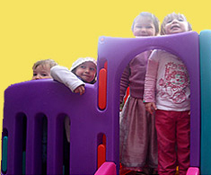

Welcome to Marchmont Playgroup!
Marchmont Playgroup provides pre-school children with a safe and stimulating environment in which every child is valued as an individual. Playgroup is about learning, playing, exploring and having fun.
Playgroup is open on Tuesday, Wednesday and Thursday mornings from 9.30am-12pm. Children who attend playgroup are aged from 2¼ to 4 years old. When running at full capacity there are 24 children, with a child:adult ratio of 5:1.
Parent's Role
The role of parents and carers is crucial in the running of the Playgroup and this partnership is seen as one of its greatest strengths. Each parent or carer is asked to carry out regular duty days at the playgroup - usually two or three days per half term. Parents also take responsibility for the management of the group by joining the Playgroup Committee. Committee Roles are very varied, and ALL parents/carers are needed to join in and share tasks.
Playgroup Day
The structure of the playgroup is designed to provide the children with a secure environment in which they can play and learn with increased confidence.
The playgroup devotes a large part of the morning to free play. Children can choose from a variety of activities such as large construction toys, threading activities, art, sand and water play, role play, craft, dressing up or listening to a story on the listening station.
We encourage outdoor play in one of our gardens, whatever the weather! Here children can climb on the climbing frame, ride the bikes and scooters, play in the playhouse or just run about. The gates to both gardens are securely locked and supervised at all times.
Activities are often theme based and centre on seasonal or cultural factors. In autumn, for example, we might look at leaves and print with them. In winter we will explore ice and create our own snowflakes. In summer we explore growing things and use some of the space outside to do this.
The children come together for snack time in the middle of the session. They are given a drink of milk or water and a healthy snack. They are encouraged to help by handing out plates, passing snacks to each other and clearing away.
Towards the end of the morning the children enjoy a singing and story time session. This is also the time when the children show their friends their 'treasures' (something they have brought from home).
You can find out more about our curriculum by talking to a member of staff.
Playgroup Staff
Anna Schaffner is our Play Leader/Manager. Anna holds a Master of Education from Edinburgh University as well as an SVQ Level 3 in Children’s Care and Development. She is planning to commence PDA in Childhood Practice in the nearest future. Anna has worked with children since 2001. She has two young children of her own and she likes to spend her free time actively with her family. She speaks a couple of foreign languages including her native Polish and French.
May Thomson is Playgroup Assistant. She joined us in March 2000 and has a wealth of experience and ideas. May has completed SVQ3 in Child Care - Early Years & Education. Her particular skill is to provide excellent and varied craft activities for the children on a day-to-day basis.
Carine Swan is Playgroup Assistant. Carine has a BA in Psychology/Sociology which covered child psychology, and SVQ3 in Children's Care, Learning & Development. She previously worked at Marchmont Playgroup providing one-to-one care for a child with additional needs. She has two young daughters.
All of our staff have been trained in First Aid, Child Protection and Risk Assessment.
Marchmont Playgroup is registered with the Social Care and Social Work Improvement Scotland (SCSWIS) under the Regulation of Care (Scotland) Act 2001, and we are inspected annually to a set of National Care Standards.
If you require any further information about our Playgroup, please get in touch using the contact details above.
Marchmont Playgroup
Marchmont St Giles Church
1A Kilgraston Road
Marchmont
Edinburgh
Phone: 07504035420
Email:
Opening Hours
| Tuesday | 9.30am-12pm |
| Wednesday | 9.30am-12pm |
| Thursday | 9.30am-12pm |
----------------------------------
Current vacancies:
Playgroup Assistant Needed
Fees
As of March 2013, each two-and-a-half-hour session will cost £8.50. The cost per week will be £25.50.
Fees are kept low by all parents contributing to the running of the playgroup. Fees are payable half termly in advance. Parents may not wish to use the service on all three days but we ask parents to pay £25.50 per week regardless of the number of hours used.
Admissions
There is no minimum age to join our waiting list, although your child will not be eligible to
attend Playgroup until he/she has reached 2¼ years. You will be notified
when a place becomes available, at which point a child information record is returned along with
a deposit of £30 to secure a place. If you would like to add your child
to the waiting list you can either print out and send the application form below or simply email
your child's name, date of birth, parent's/carer's name,
address and telephone number to